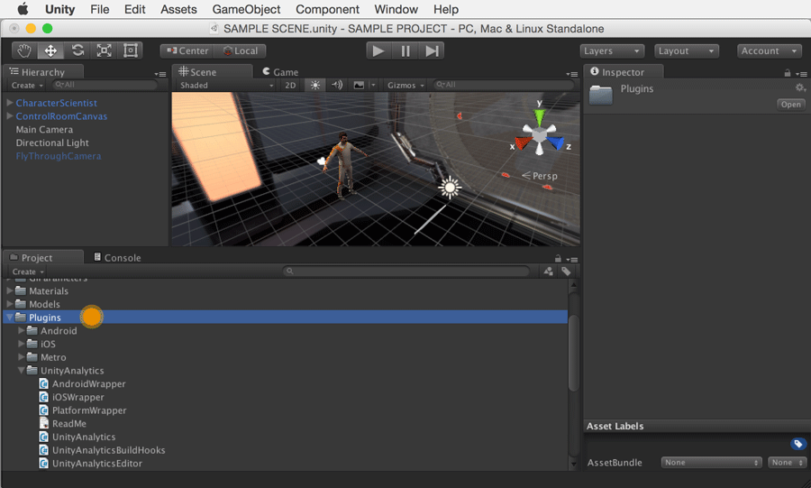

Upgrade Unity Analytics 4.x-5.1 (SDK) to 5.2 onwards
The process is divided into three general steps:
- Removal of existing Unity Analytics SDK components
- Re-integration of Unity Analytics
- Updating of Advanced Integration events
1. Removal of existing Unity Analytics SDK
Version 5.2 onwards of the Unity Editor comes with Unity Analytics built-in. We advise you to remove existing Unity Analytics SDK components to ensure no conflicts and to help you maintain a cleaner project.
Locate the existing Unity Analytics SDK components in your Project folder. Most likely they will have been saved to Assets > Plugins. Be sure to only select analytics-specific assets.

Delete all components.
You can confirm that you successfully removed the Unity Analytics SDK if you close and re-open your project, and then don't see the following message prompt. If you continue to see the prompt confirm all the Unity Analytics SDK components have been removed.

2. Re-integration of Unity Analytics
Follow the instructions in Setting Up Analytics.
You can determine that you successfully completed the upgrade by checking the SDK version in Play to Validate step and confirming that the correct Editor version (ie: u5.2 or u5.3) is displayed in Validator.
3. Updating Advanced Integration events
If you did any existing Advanced Integration previously, you will also need to update the namespace and the calls to use the 5.2 and up syntax. Follow 5.2 onwards Advanced Integration instructions to update.